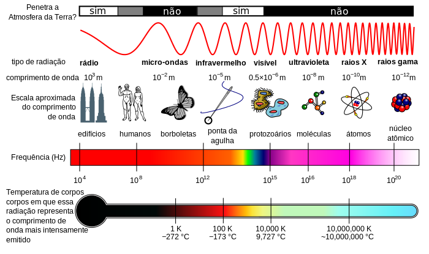
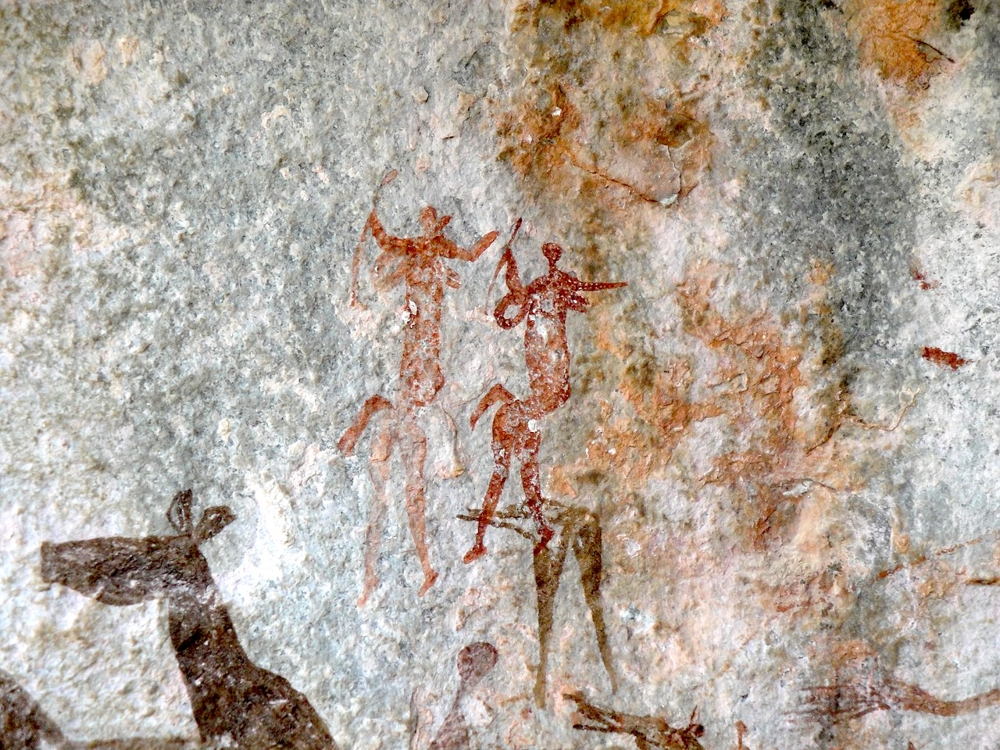
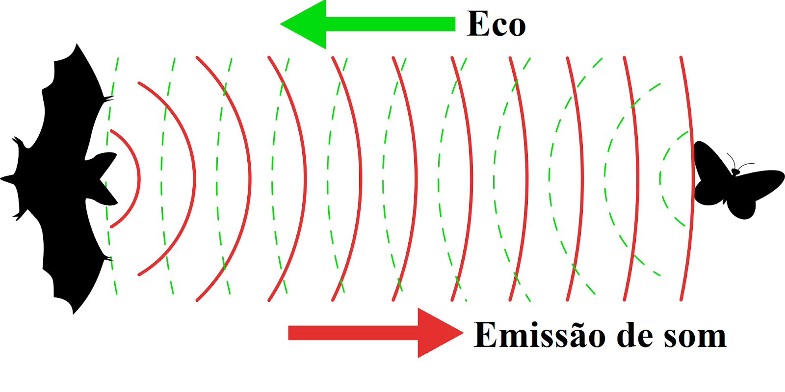
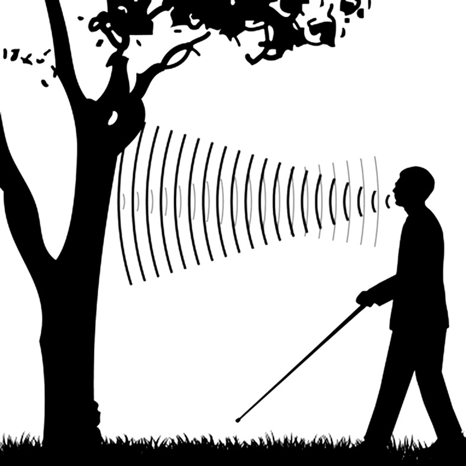

Gabriel H. P. Moreira (197364) | Raul C. Alexandre (205179)
Partindo de um contexto de personagens de filmes/desenhos animados, e inserindo uma base científica, nossa intenção neste projeto é discutir sobre como supostamente ocorre a comunicação por telepatia a partir da história do professor Charles Xavier (X-Men). Assumindo uma situação hipotética onde tal habilidade realmente exista, vamos discutir qual a definição de telepatia e como ela pode supostamente ocorrer - neste momento, nossa intenção é criar uma diálogo a respeito do conceito de Ondas e qual a importância delas para a comunicação. A seguir, pretendemos debater a possibilidade da invenção de tecnologias/aparelhos que viabilizem tal habilidade. Por fim, nossa intenção é usar a questão principal como clímax para discutir a possibilidade de evoluirmos e, algum dia, termos a possibilidade de nos comunicarmos com o poder da mente. Estruturado em oito seções a partir dessa descrição e fundamentado nas habilidades EM13CNT208, EM13CNT301 e EM13CNT304 da BNCC, o tema foi trabalhado a partir da exposição de textos, vídeos e outras referências com algumas questões em aberto no decorrer da sequência desenvolvida.
Eu tenho certeza que todo mundo algum dia já quis possuir o poder da telepatia. Conversar com determinada pessoa por pensamento, ou até mesmo ler os pensamentos alheios… Bom, se isso seria legal ou não, é uma outra história. Mas que você já quis, eu tenho certeza! Neste sentido, será que isso é possível? O que é exatamente “telepatia”? Confira no vídeo abaixo!
A ideia de transmitir informação pelo ar é mais antiga do que parece, e o rádio é o maior exemplo disso. No vídeo que assistimos, fizemos um paralelo com este tipo de transmissão que foi pensado para substituir os telégrafos. Não existem registros que confirmem e atribuem a primeira experiência de transmissão de informação sem o uso de cabos, tendo como principais candidatos o físico italiano Guglielmo Marconi e o padre brasileiro Roberto Landell de Moura. Independentemente do pioneiro, o fato é que a tecnologia se difundiu rapidamente e é amplamente utilizada até hoje. Por ser extremamente comum no nosso cotidiano, acabamos nos acostumando com a tecnologia e a consideramos, nas suas devidas proporções, como ultrapassada. Mas como de fato funciona a comunicação via rádio? Deixe aqui embaixo sua hipótese!
Como vimos no vídeo da primeira página, se quisermos resumir toda a explicação em uma única palavra, ela seria "ondas". Logo na origem da informação a ser transmitida - como nossa voz, por exemplo - vemos um exemplo do uso desse conceito: quando temos a intenção de falar, nosso cérebro cria impulsos nervosos que fazem com que os músculos de nossas cordas vocais se contraiam de acordo com o som que queremos emitir. O ar, expulso dos pulmões pelo diafragma e pelos músculos do tórax, faz com que as cordas vocais contraídas vibrem ao passarem pela laringe. Por fim, essa vibração gera uma perturbação que se propaga pelo ar e chega aos nossos ouvidos ou, voltando ao nosso caso, ao microfone da rádio. Este, por sua vez, é um equipamento que transforma a energia gerada pela vibração de nossas cordas vocais e é propagada através do ar em um sinal elétrico que, amplificado, chega até a antena da rádio. Na antena, um campo eletromagnético será gerado devido a variação nesse sinal elétrico; esse campo magnético se desprenderá da antena e viajará no espaço na forma de uma onda eletromagnética (olha ela aqui novamente!). Essa onda viajará pelo espaço e, quando encontrar uma antena receptora, irá seguir o processo inverso ao que falamos aqui, resultando no som que ouvimos das rádios. Mas aqui eu te faço uma outra pergunta: se existirem duas emissoras de rádio, como escolher qual das rádios ouvir se os dois sinais estão chegando ao mesmo tempo no meu rádio? Para responder isso, podemos utilizar uma característica das ondas para responder: a frequência, que é a quantidade de vezes que a onda irá oscilar em um determinado espaço de tempo. Neste caso, cada emissora possui uma frequência específica de emissão, e conseguimos programar qual frequência queremos estar ouvindo.
Entretanto, o foco de toda a discussão aqui não é sobre as rádios, mas sim a possibilidade da comunicação por telepatia. A partir desse paralelo, conseguimos ter uma noção sobre como a informação poderia viajar de uma pessoa para outra por telepatia; se considerarmos uma situação onde se sabe como coletar a informação do pensamento sem o uso de qualquer sentido (olfato, paladar, visão, audição e tato) e transformá-la em um sinal elétrico, poderíamos emitir esse sinal em forma de onda eletromagnética a ser recebida por outra pessoa sintonizada na sua frequência.
Com base no paralelo feito na seção anterior, foi possível observar como poderia se dar, de forma hipotética, a comunicação entre duas pessoas por telepatia. Sabendo dessa relação, desafio você a responder a seguinte questão: se fosse possível emitir uma onda eletromagnética como comunicação por telepatia, a outra pessoa receberia a mensagem instantaneamente? Se não, quanto tempo para a mensagem viajar entre duas pessoas que estão distantes por 100 metros? Faça sua pesquisa e deixe suas conclusões aqui no fórum!
Pronto para pôr a mão na massa e construir seu próprio rádio? Neste tópico propomos para vocês a construção de um rádio de galena, que basicamente é um simples receptor de modelo AM. A galena é um dos primeiros minerais a serem utilizados como semicondutores. O rádio necessitará de uma grande antena de fio cru, um pequeno circuito com uma bobina e um capacitor e alguns outros pequenos componentes. Mas o mais interessante deste rádio é que ele não necessita de uma fonte de energia para funcionar, pois toda sua energia é captada pela sua grande antena. Neste vídeo você encontrará mais detalhes sobre a construção do rádio, os materiais e todo passo a passo.
Pare para pensar alguns minutos e imagine como o Mundo seria hoje sem a internet… Estranho, certo? Quase que inviável na verdade. E se torna mais estranho ainda quando lembramos que a internet completou 50 anos recentemente, ou seja, é algo “novo” na sociedade. Mas então, podemos refletir novamente e pensar, como acontecia a comunicação anos antes, 500 anos atrás, 1000 anos atrás… Certamente, hoje vivemos o “ponto alto” da comunicação. Nunca foi tão fácil se comunicar instantaneamente com alguém que esteja distante de você. Logo, podemos trazer a ideia de que, se a comunicação tem, a cada dia que passa, evoluído cada vez mais, será que um dia nós conseguiremos desenvolver equipamentos que permitam uma comunicação por telepatia? Antes de criarmos hipóteses para este questionamento, vamos refletir um pouco sobre a evolução da comunicação ao longo da história. Podemos começar lembrando que uma das maiores necessidades do ser humano é repassar informações aos outros. Os homens primitivos que possuíam um cérebro rudimentar já se comunicavam uns com os outros a partir de posturas, gestos ou grunhidos, seja para repassar informações sobre ataques ou até para expressar emoções, culturas e sentimentos. Em um dado momento, alguns destes homens primitivos começaram criar suas ferramentas e objetos de caça e defesa, elaborando um processo de criação e passando isso para os demais, através de alguns gestos ou até realizando a repetição do processo, e foi desta forma, simples e primitiva que foi criada umas das primeiras formas de linguagem. Com o tempo, a comunicação entre os homens primitivos ficou mais clara e sofisticada, tomando formas e desenhos, desta forma a comunicação passou-se a não ser apenas entre os membros de um único grupo, mas sim, entre povos de diferentes tribos.
Mas a grande mudança na história da comunicação se deu por volta dos 4000 a.C. quando, na Mesopotâmia e no Egito, o homem desenvolveu a habilidade da escrita. Este fato foi tão importante para a humanidade a ponto de usarmos dele para classificar períodos da história humana. Antes da escrita classificamos como pré-História e após a escrita temos a História, a partir desse momento temos registros escritos que datam os acontecimentos gerais e relatam como o homem vivia, o que ele sentia em relação ao mundo e como se comunicava. Em 59 A.C. em Roma, Júlio César cria o primeiro exemplar de um jornal, um papel com as escritas dos principais acontecimentos sociais e políticos do império. Mas o jornal era algo limitado, primeiro porque são poucas as pessoas que sabiam ler na época e um outro motivo era de que o alcance também era limitado. Esses dois problemas foram solucionados com a invenção do rádio. Vimos que o rádio transmite ondas com um alto alcance e velocidade, o que permitiu a transmissão de informações rapidamente. Hoje temos aparelhos sofisticados e acessíveis como o próprio celular, que nos permite realizar ligações para qualquer lugar do mundo. O homem criou a comunicação, inventou aparelhos que a facilitam, criamos TV’s, celulares e desenvolvemos a internet. Então, podemos nos perguntar, qual o próximo passo para a comunicação? No vídeo abaixo falaremos um pouco sobre o nosso futuro e suas infinitas possibilidades.
Leia mais em:
História da comunicação humana
Meios de comunicação
Quem nunca acordou no meio da noite para tomar água ou ir ao banheiro e no meio deste perigoso trajeto chutou alguma quina com o dedinho do pé e sentiu uma imensa dor, ao mesmo tempo que pensamos em suportar aquela dor, podemos pensar também em como seria interessante ter a habilidade de percepção dos objetos a partir do poder da mente. O mais interessante disso tudo é que alguns animais possuem essa habilidade e ela se chama ecolocalização ou bissonar, baleias transmitem informações no fundo do oceano, morcegos conseguem voar e não trombar em nada mesmo no escuro da noite, esses só são dois exemplos de animais que possuem a ecolocalização. Podemos pensar um momento e procurar entender porquê dois animais, aparentemente tão distintos, possuem uma habilidade tão diferenciada em comum. Pensou em algum motivo? Veja, baleias vivem nas profundezas do oceano, em águas escuras e turvas, logo a visão é bem debilitada. Morcego é um animal noturno, que vive no escuro da noite ou em cavernas, onde a visão é insuficiente. Seja para caçar ou se locomover, a ecolocalização é uma habilidade crucial para estes animais, mas como ela funciona de fato? A ecolocalização é uma capacidade biológica sofisticada que possibilita detectar a posição ou até a distância de outros objetos, animais e plantas através da emissão de ondas ultrassônicas, o mesmo usado usualmente em exames médicos (ondas sonoras que possuem frequências maiores de 20 kHz, que inclusive é o limite superior à capacidade humana de audição), os animais emitem este som e analisam (cronometram) o tempo gasto para essas ondas serem emitidas, refletidas e retornarem até eles, esse processo também conhecemos como eco, quem nunca visitou algum local vazio e observou o som retornar ao próprio ouvido não é mesmo. Mas essa habilidade foi desenvolvida a partir da necessidade desses animais, e isso na biologia tem o nome de adaptação natural, que basicamente é a aquisição de características por animais (ou outro organismo) buscando melhores condições para sobrevivência no seu ambiente.
Há grandes evidências biológicas que sustentam a visão de que os morcegos surgiram há cerca de 56 milhões de anos atrás e formam um grupo de origem única (monofilético) e nem todos eles possuem a ecolocalização, após um processo de adaptação natural, surge entre os morcegos uma nova subordem chamada de Yangochiroptera, que justamente são os que possuem a habilidade de ecolocalização, esses morcegos emitem ondas na faixa de 20 kHz até 215 kHz, pela boca ou pelas suas narinas (varia conforme a espécie). Essas ondas atingem obstáculos e voltam na forma de ecos (com frequência menor) com isso eles conseguem perceber se há obstáculos no caminho, saber sua distância e ter uma boa ideia da velocidade relativa entre ele e sua presa (como alguns insetos voadores).
A ecolocalização das baleias é semelhante aos morcegos, com a diferente de que as baleias possuem um órgão grande na frente da sua cabeça, e ele realiza uma espécie de foco para as ondas sonoras, as ondas são emitidas e recebidas no maxilar inferior. As baleias produzem uma série de sons com sua laringe e cavidades, esses sons possuem diferentes frequências que variam desde 50 kHz até 200 kHz. Após perceber o lapso de tempo entre as ondas sonoras a baleia consegue determinar a distância entre ela e um objeto ou uma presa.
O processo de ecolocalização é caro do ponto de vista energético, isso pode explicar o porquê de muitos organismos não desenvolverem tal habilidade, visto que ela surge da necessidade e do déficit na visão.
Leia mais em:
Origem e evolução de morcegos
Baleia consegue direcionar impulsos sonoros para localizar presas
Ecolocalização
Veja como funciona a ecolocalização – o sonar inerente da natureza
Vimos anteriormente a interessante habilidade que morcegos e golfinhos compartilham. Estes animais possuem a habilidade de se localizar mesmo em ambientes sem luz, e podemos pensar então, por qual motivo o ser humano não possui esta habilidade? Será que seria possível realizar algum procedimento para desenvolver tal habilidade? Sabemos que uma das principais características do homem, desde a origem das espécies, é a capacidade de enxergar, essa habilidade foi crucial para que o homem desenvolvesse hábitos diurnos onde a visão é clara e limpa graças a iluminação do Sol, com isso, podemos dizer que não há necessidade em o homem possuir uma outra habilidade para se localizar, pois a visão já cumpre este papel. A partir daqui podemos criar duas ideias, uma seria a hipótese de que se seria possível realizarmos treinos para desenvolver a ecolocalização e a outra é de que, o homem sabendo da existência da ecolocalização, poderia desenvolver aparelhos para realizar ou replicar essa habilidade.
Sabemos que o homem possui grande capacidade de treinamento, mas será que é possível desenvolver habilidades sensoriais? Por mais incrível que pareça isso é possível e tem ficado cada vez mais comum, conforme algumas pesquisas desenvolvidas pela universidade de Durham (Inglaterra). Durante o período de 10 semanas, pesquisadores usaram ondas sonoras emitidas por cliques para estimular 26 pessoas (12 deficientes visuais e 14 pessoas com visão plena) a se localizarem aos arredores apenas pelo som. As sessões de treinamento se repetiram durante duas vezes na semana com cerca de três horas de duração. Estes participantes tinham entre 21 e 79 anos de idade e as sessões de treinamento continham desde tarefas simples até exercícios mais complexos. A pesquisadora responsável chamada Lore Thaler disse que “Eu não consigo pensar em nenhum outro trabalho com participantes cegos que trouxe um feedback tão empolgante” e relata também que as pessoas que participaram do estudo comentaram sobre os efeitos positivos em sua mobilidade, independência e bem-estar. Nesse sentido, um homem que também participou deste estudo, chamado Daniel Kish relata sobre a importância do estudo da ecolocalização humana. Daniel ainda brinca se auto-intitulando como “batman”, mas não está dizendo que ele luta contra o crime durante a noite, mas sim que, como um morcego, Daniel tem a habilidade de “enxergar” mesmo que tenha perdido a visão no começo de sua vida, classificamos pessoas assim como um “navegador especializado em ecolocalização”. Daniel Kish realiza de 3 a 4 movimentos por segundo com a sua língua e palato, ele relata que “é como uma linguagem. Você pergunta ao seu redor onde você está e se localiza por meio das ondas sonoras”, essa habilidade permite que Kish leve uma vida muito distinta de outras pessoas que possuem algum problema de visão. Enquanto muitos necessitam do auxílio de bengalas, cães-guias, o americano Daniel Kish anda tranquilamente de bicicleta nas ruas e ainda se voluntaria a ajudar como guia para outras pessoas sem visão. Isso, graças ao conhecimento de que a onda sonora sai da boca dele, “bate” nos objetos e devolve informações. O cérebro então traduz esses códigos em noções de espaço.
Sonares são instrumentos encontrados muitas vezes em navios e submarinos e é utilizado para a detecção de objetos, animais e até outros submarinos e navios no fundo do mar. Ele é amplamente utilizado para fins bélicos e por navios de pesca que o utilizam para localizar cardumes de peixes. Os sonares funcionam a partir da emissão de pulsos sonoros, muito semelhante ao sistema de ecolocalização que comentamos anteriormente, pois esse pulso sonoro se propaga no mar até se chocar com algum obstáculo e retornam até a fonte, sabendo o valor da velocidade de propagação da onda na água e o tempo entre a emissão e a recepção, pode-se determinar a distância entre o submarino e o obstáculo. A diferença entre os sonares e os radares é a composição da onda emitida. Os sonares emitem ondas sonoras que são mecânicas, ou seja, elas dependem de um meio de propagação (como a água). Os radares são equipamentos que emitem ondas eletromagnéticas para a detecção de objetos. A vantagem do radar é que as ondas eletromagnéticas não necessitam de um meio para a propagação, podendo funcionar até no vácuo. Neste tópico vimos basicamente o conceito de eco. Vamos aplicar este conhecimento em um problema? Pegue seu lápis e papel e solucione este simples problema: Sabemos que a velocidade de propagação do som no ar é igual a 340 m/s, e que o tempo de persistência auditiva humana é de aproximadamente 0,1 s. Qual seria então, a mínima distância necessária entre uma fonte emissora (uma pessoa) e um obstáculo qualquer para que a pessoa ouça o eco de sua voz?
Leia mais em:
Cientistas conseguem ensinar ecolocalização para humanos em novo estudo
Echolocation in humans: an overview
Ecolocalização: o que os seres humanos podem aprender com os golfinhos
Eis a grande questão! Mas como já vimos logo no primeiro vídeo, a resposta é não. A telepatia pode ser considerada inviável logo pelo seu sentido original, que se baseia em sentimentos ou emoções que são transmitidas através da mente, sem a utilização dos nossos sentidos convencionais ou gestos. Dessa forma, qualquer mecanismo fisiológico do nosso corpo, como falamos do emissor e do receptor, fugiria do seu conceito. Além disso, como pudemos ver, todas as formas de comunicação e capacidades biológicas de outros animais funcionam da mesma forma: através de ondas, sejam elas mecânicas, como o som que emitimos ou o radar de ecolocalização dos morcegos, ou eletromagnéticas, como as rádios. Nada impede que o ser humano algum dia desenvolva um aparelho inovador que permita a transmissão de pensamentos; mas agora você já sabe que não terá nada de mágico e ele ocorrerá de forma similar às que acabamos de ver!